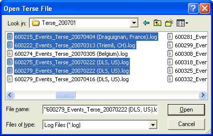
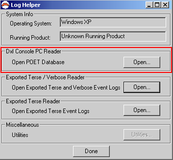

Using LogHelper
This procedure describes how to use LogHelper software to troubleshoot Event Log errors.
Note: For detailed information on LogHelper screens, refer to the
Software: LogHelper Screen Details document.
Perform the steps for the type of PC and Event Log files to open and use LogHelper.
- Laptop or desktop PC user with both TERSE and VERBOSE Event Log files:
- Navigate to the LogHelper folder on the hard drive of your laptop or desktop PC.
- Double-click the file LogHelperU_Laptop.exe to launch the program.
- Select the
Open button next to Open Exported Terse and Verbose Event Logs under Exported Terse/Verbose Reader.
Note: Refer to the Software: Transferring Event Log Files procedure.
- At the pop-up requesting the exported TERSE and VERBOSE event log files, select Open and browse to the location of the TERSE and VERBOSE Event Log files. The pop-up remains open until both files are provided.
- The LogHelper tool analyzes the Event Log errors and displays the data for interpretation.
- Laptop or desktop PC user with only a TERSE Event Log file:
- Navigate to the LogHelper folder on the hard drive of your laptop or desktop PC.
- Double-click the file LogHelperU_Laptop.exe to launch the program.
- Select the Open button next to Open Exported Terse Logs under Exported Terse Reader.
- At the pop-up requesting the exported TERSE Event Log file, select
Open and browse to the location of the TERSE Event Log file. The pop-up remains open until the requested file is provided.
Note: If there are multiple TERSE Event Log files to analyze, use the [Shift] key to select all the files or the [Ctrl] key to select these specific files:

- The LogHelper tool analyzes the Event Log errors and displays the data for interpretation.
- For UniCel DxI console user:
- Insert the floppy disk containing LogHelper into the desired DxI UniCel console PC floppy A:\ drive.
- Press the [Windows] key or press [Ctrl] + [Esc].
- Select .
- Double-click on the 3.5-inch floppy A:\ drive.
- Double-click the file LogHelperUD_ConsolePC.exe to launch the program.
- Select the
Open button next to the Open Poet Database under DxI Console PC Reader.

- LogHelper opens and reads the POET Event Log database. The LogHelper tool analyzes the Event Log errors and displays the data for interpretation.